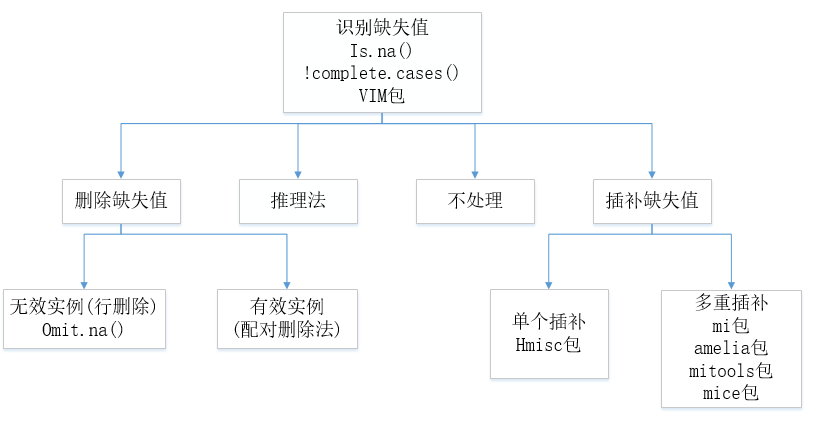

处理缺失值数据的方法有很多，但不能保证都生成一样的结果。下图列出了一系列可用来处理不完整数据的方法，以及相关的R包。

常用缺失值的处理方法大致可以分为4类：推理法、删除法、插补法和不处理。每种处理方法都有一定的适用条件，对于缺失值处理方法的选择需要结合实际问题，具体问题具体分析。以下为各种方法的详细介绍
（1）推理法
推理法适用于变量之间包含数学或逻辑关系的情况，根据变量间的数学或逻辑关系来填补或恢复缺失值。
（2）删除法
删除法适用于样本数很多并且出现缺失值的样本占整个样本的比例相对较小的情况。当缺失的数据集中在几个对于研究相对不太重要的变量上，可以选择删除这些变量；当数据集中每个变量都必须包含有效数据值的观测才能进行下一步分析时，常采用行删除法，即将包含一个或多个缺失值的任意一行删除，使得最终获得的数据集不含缺失值。
在处理随机缺失和完全随机缺失数据时可以根据情况选择采用删除法，但是在处理非随机缺失数据时，采用删除法可能会使模型出现偏差，因此需要谨慎处理。
（3）插补法
插补法是用最有可能的值来插补缺失值，这种方法比全部删除不完全样本所产生的信息丢失要少，常用的插补法有：均值/中位数/众数插补法、回归法、热平台/冷平台插补法和多重插补法等。
均值/中位数/众数插补法是指把缺失值用相应变量的均值、中位数或众数替换，是一种比较粗糙的处理方法，其可行性也要取决于具体情境，如果变量的数值本身波动比较小或者对相应变量的影响较小，使用这种粗略的插值法才可以得到使人满意的结果。
回归法插补缺失值是通过探寻变量之间的相关关系，找到相关性较高的变量后，再寻找他们之间的线性回归关系，最后通过线性回归关系计算缺失值进行插补。
热平台插补法又称匹配插补，对于一个具有缺失值的样本，在具有完全数据的样本中寻找一个与它相似度最高的样本，用该样本的值填补缺失值；冷平台插补法又称条件均值插补法，是指根据相关变量将总体进行合理分层，对于任一缺失值，用该样本所在的样本数据的均值代替。
多重插补（MI）是一种基于重复模拟的处理缺失值的方法，在面对复杂的缺失值问题时，这是最常选的方法。它从一个包含缺失值的数据集中生成一组完整的数据集（通常是3-10个），每个模拟数据集中，缺失数据将用蒙特卡洛方法来填充，然后通过组合输出结果给出估计的结果。
(4) 不处理
对缺失值进行插补不一定完全符合客观事实，所以不处理缺失值而直接在包含缺失值的数据上进行分析也不失为一种方法，处理方法包括贝叶斯网络和人工神经网络等。但是，贝叶斯网络仅适用于对领域知识具有一定了解的情况，否则直接从数据中学习贝叶斯。